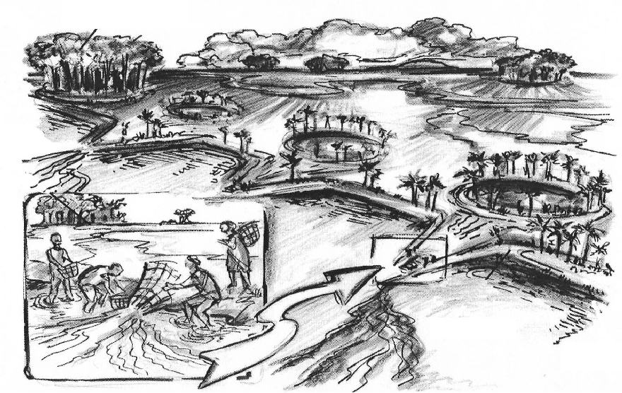
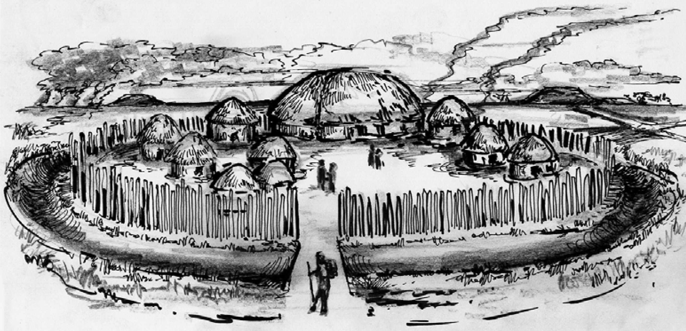

¿Qué pensaría si le digo que la selva amazónica no es una extensión infinita de naturaleza indomable, sino más bien uno de los mayores jardines creados por la humanidad? Más grande que Versalles y más asombroso que los de Babilonia. Probablemente diría que estoy exagerando, y tendría razón. No existe mano de obra suficiente para semejante trabajo. Pero lo que vengo a enseñar aquí es una linda manera de entender cómo el ser humano interactuó (e interactúa) con el entorno en donde vive, además de desmitificar la idea del medio ambiente prístino, donde parece haber sólo dos formas de relación humano-entorno: una donde la humanidad es pasiva frente a la naturaleza, adaptándose a las diferentes presiones ambientales que esta ejerce; o bien tomando un rol activo, depredándola para conseguir mejores condiciones de las que ofrece, sin posibilidades de puntos medios.
Autores como Levis et al. (2018) o Erickson (2006) trabajaron justamente en este sentido, buscando un punto en el cual la actividad del ser humano modifique la naturaleza sin destruirla. En sus trabajos utilizan los conceptos de domesticación de bosques y paisajes, respectivamente, entendiendo la domesticación no como un proceso de modificación genética de especies, sino como una forma por la cual las actividades culturales transforman el ambiente, volviéndolo un paisaje, una forma de ambiente construido (Erickson, 2006).
Representación ilustrada de los paisajes domesticados en amazonas boliviano durante el primer milenio d.C.
Erickson trabaja en la llanura de Moxos, ubicada en el departamento de Beni, Bolivia. Esta región forma parte de la cuenca del río Amazonas y es una región mayormente llana, surcada por varios ríos y salpicada por bosques, sabanas y humedales. La zona presenta una marcada estacionalidad, definida por una temporada de lluvias y una de sequía, por lo que se hace muy difícil encontrar agua. Para sortear estas dificultades, los habitantes del Moxos prehispánico alteraron el ambiente a nivel topográfico, hidrológico y en la composición del suelo mediante el control del fuego, de los diferentes flujos de agua y la construcción de diferentes estructuras de tierra, como camellones de cultivo elevados que permitieron el cultivo de plantas en un ambiente fuertemente presionado por las inundaciones; construyeron calzadas y diques formando grandes extensiones de tierra inundable y de esa manera generar reservas de aguas poco profundas para una gran cantidad de peces; crearon canales entre arroyos para facilitar la circulación en canoas; trabajaron porciones de monte a modo de "isla" dentro de las cuales se encontraron gran cantidad de especies vegetales de gran importancia económica; construyeron montículos, elevaciones de hasta 9m de alto que llegan a ocupar varias hectáreas, compuestas por capas de tierra y desechos orgánicos propios de la actividad doméstica, donde se encontraron gran cantidad de restos cerámicos, huesos de animales, conchas, herramientas y enterramientos humanos. A este tipo de manejo del territorio Erickson lo llama domesticación de paisajes, la cual está caracterizada por una gran modificación del ambiente preexistente, generando una serie de ambientes en mosaico y permitiendo el mantenimiento de la biodiversidad de la zona.
Levis, en cambio, habla de domesticación de bosques, entendiendo al término como la modificación parcial del ambiente de forma sutil y constante. Estos cambios fueron producto de dos ejes fundamentales en la vida de los pueblos amazónicos: la horticultura y la movilidad. Los diferentes grupos que habitaron la cuenca del río Amazonas llevaban a cabo principalmente una economía de subsistencia basada en la caza, recolección, pesca y horticultura. Para realizar esta última estrategia en un ambiente tan cerrado como es la selva, debían llevar a cabo una serie de trabajos, como despejar una porción de terreno mediante el uso controlado del fuego, eliminar de plantas no-útiles, cuidar plantas útiles, seleccionar fenotipos promoviendo la reproducción de aquellos que producían en mayor cantidad/calidad, transportar y cultivar aquellas especies importantes o mejorar las condiciones del suelo mediante la incorporación de materia orgánica. Otros puntos señalados por Levis son la atracción de animales dispersores de semillas, entendiendo que el permitirles alimentarse de aquellas plantas generará una mayor dispersión de sus semillas, logrando aumentar la disponibilidad de dichas plantas.
Representación ilustrada de aldeas en anillo
Ahora bien, estas prácticas no son recientes. Si bien la discusión sobre la fecha en la cual estos grupos llegaron al continente es muy amplia y compleja, existe un consenso en que este hito no sucedió antes de los 13.000 años antes del presente. Teniendo en cuenta esto, podemos pensar que la actividad hortícola en el Amazonas se realiza de forma ininterrumpida desde hace varios miles de años.
Entonces, ¿La selva amazónica es un ambiente prístino, producto únicamente de la interacción de factores no humanos como el clima y la actividad de animales y plantas a lo largo del tiempo? ¿O el hecho de que los seres humanos vivieran en ella influyó de alguna manera? Según estos autores, pareciera correcto afirmar que la actividad humana influyó en su figura.
La construcción de canales, calzadas, diques, camellones y montículos generó en Moxos una multitud de microambientes heterogéneos donde antes se encontraba una gran llanura, siendo aprovechados no solo por los seres humanos sino también por las múltiples formas de vida que se encontraban en la región. En el mismo sentido, el constante movimiento de los pueblos amazónicos, sumado al uso y abandono de huertos, la dispersión de semillas tanto por humanos como animales, la alteración en la composición del suelo y la selección de fenotipos útiles, terminaron por transformar gran parte de la estructura biótica de la selva, aumentando la distribución y disponibilidad de aquellas plantas que produjeran alimento o materia prima para fabricación de herramientas o combustible.
Bibliografía y fuentes
- Erickson, Clark. 2006. The domesticated landscapes of Bolivian Amazon. En: W. Balée y C. Erickson (Eds.) Time and Complexity in Historical Ecology studies in the Neotropical Lowlands Columbia University Press. 235-278.
- Levis, C., B. M. Flores, P. Moreira, B. G. Luize, R. P. Alves, J. Franco-Moraes, J. Lins, E. Konings, M. Peña-Claros, F. Bongers, F. R. C. Costa y C. 2018. Clement. How People Domesticated Amazonian Forests. Frontiers in Ecology and Evolution 5, Article 171.